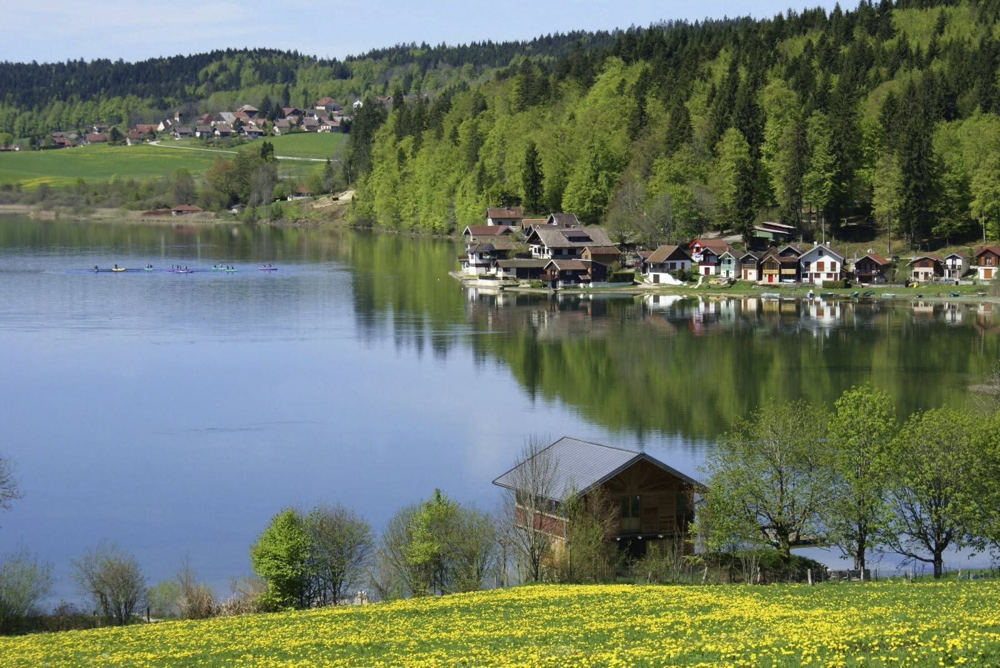

Le lac paisible
Sur le lac de Saint-Point,
au jour qui frissonne,
La brise effleure l’eau
d’une caresse monotone,
Et les ondes légères,
en cercles éphémères,
Murmurent des secrets
aux roseaux solitaires.
Les maisons du rivage,
en teintes éparpillées,
Se penchent doucement
dans l’eau comme émerveillées,
Leurs façades tremblées
en reflets incertains
Dansent au fil du vent,
se défont,
puis reviennent.
Les canards nonchalants
glissent sans bruit ni hâte,
Traçant sur le miroir
des lignes délicates,
Tandis que sur la berge,
entre herbes et cailloux,
Leurs pas laissent l’empreinte
d’un instant presque flou.
Les rires des enfants montent
en éclats de lumière,
Courants,
joyeux,
le long de la berge,
Leurs jeux tissent au vent
une insouciante chanson
Qui se mêle au clapotis
et vibre à l’horizon.
Et le lac,
immobile
en son calme profond,
Recueille chaque instant,
chaque souffle,
chaque son,
Comme un vieux cœur
paisible aux battements discrets
Gardant l’écho du monde
en son secret parfait.
Djamel Metref
Bians Les Usiers le 30 Avril 2026

← Tous les poèmes
Le lac paisible
Carnets de voyages · Nature et écologie